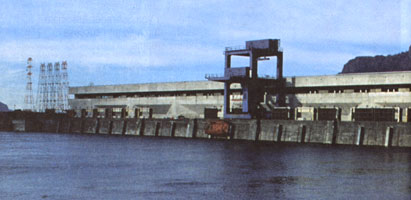
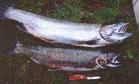

End Of The Line
August/September 1994
Energy & Environment
Joel Burne reports on the plight of America's once most prolific fisheries, the Columbia River, and efforts to save its diminishing salmon.
HYDRO POWER PRICE?
"We don't have a (Columbia) river anymore. We have a series of ponds, bathtubs. We've created an environment for fish that stresses them terribly."
Kent Martin sits in the living room of his comfortable two-story home watching raindrops pound the sliding-glass doors. Outside, pastures already damp with puddles drain into a creek that meanders down the Skama Valley to the hamlet of Skamokawa, Washington, where it empties into Brooks Slough and the broad expanse of the Columbia River. The river and those fields sustained Kent Martin's father, his grandfather, his great-grandfather and thousands of other Nordic immigrants who settled the fishing communities on the Lower Columbia.
But they no longer sustain Kent Martin
"This is incredibly painful. It's like living in a mausoleum," says the barrel-chested commercial fisherman whose steel-rimmed glasses and shining pate give him an American Gothic air. "I've seen fire departments, schools, churches, all the institutions holding these communities together, falling apart. Everything people said in the 1940s is coming true like a curse:"
What people said, particularly a young fisheries biologist named Joseph A. Craig, was that the rapid industrialization of the Pacific Northwest was having a dramatic impact on a resource once thought as inexhaustible as the mighty river itself. Columbia River salmon. As early as 1935, Craig warned that logging, soil erosion, mining, pollution, irrigation, and overfishing were taking their toll on salmon stocks that were diminishing even then. Craig was particularly concerned with the large hydroelectric dams proposed for the Columbia River. He warned that dams would flood spawning grounds, hinder juvenile fish on their way to the sea, and, if built without adequate fish passages, would annihilate entire runs.
"As power and irrigation projects become more numerous," he wrote, "the protection and conservation of the migratory fishes of the Columbia present a problem that requires the best efforts of our engineers and biologists and the cooperation of the state and federal agencies involved, if this resource is to be maintained."
Since then more than 200 dams have been built in the Texas-sized Columbia River Basin, many with faulty fish ladders or none at all. Half of the salmons' original spawning ground is no longer accessible to them. In addition, farmers diverted river water to irrigate more than eight million acres of fertile desert, while loggers dearcut swaths through the Northwest's temperate rain forest. The dams also succeeded where plate tectonics failed, creating a seaport in Idaho.
REPLACING THE LOSSES?
Smolts raised in hatcheries don't seem to develop defenses they need in the wild, giving gulls and other fish-eating birds a field day.
Not surprisingly, salmon have returned in fewer and fewer numbers to a river that, after five million years of annual migrations, began looking startlingly unfamiliar. An estimated 16 million salmon were spawning in the Columbia and its tributaries when Lewis and Clark arrived in 1802. Only 300,000 wild salmon and steelhead return to the Columbia basin today, and that number is dwindling. Recent studies estimate 90 percent or more of human-inflicted mortality comes from the dams and the reservoirs behind them.
Last October the National Marine Fisheries Service (NMFS) released a draft proposal to save four threatened or endangered salmon runs in Idaho's Snake River, the Columbia's major tributary. These are some of the toughest salmon in the system, swimming 900 miles upstream to an elevation of 6,500 feet and fording eight monolithic dams on the Snake and Columbia rivers. The plan called for eliminating fishermen like Kent Martin from the Lower Columbia by 2002 and for continued study of the dam problem.
"We have some of the best salmonid biologists in the nation here," Martin says. "You sit down and have a cup of coffee with them and for most there is this impotent rage that comes over them because of what's being done to this system. Because what's running this system is politics, not biology."
Bob Eaton knows a thing or two about the politics of power. As executive director of Salmon For All, he represents some 800 commercial fishermen and processors on the Lower Columbia. An enormous chinook salmon, steely gray with mouth agape, hangs on his office wall at the port of Astoria, Oregon. Tankers and grain ships glide by his office window, waiting their turn to enter Portland's ship channel.
"To talk about the Columbia River is really inaccurate," says Eaton. "We don't have a river anymore. We have a series of ponds, bathtubs. We've created an environment for anadromous fish that stresses them terribly." Four years ago Eaton represented commercial fishermen at the so-called Salmon Summit, an attempt by Senator Mark Hatfield (D-OR) to bring together industry, agriculture, and fishing interests to forge a regional solution to the declining runs. But instead of contributing to a constructive discussion on saving salmon, Eaton says, the state fisheries managers were immediately blasted by the dam interests for not doing their jobs. This broadside was launched despite the fact that one of the threatened runs, the summer Chinook, has been off-limits to fishermen since 1964.
"Early on at the Salmon Summit it was evident that if you eliminated the comme rcial and sport fisheries on these stocks from Alaska to the Danes, you still couldn't save those runs," says Eaton. The problem is that the protected fish-Snake River sockeye and spring, summer, and fall chinook-at times mingle with healthy wild stocks and the 2.2 million hatchery fish that return to the Columbia each year. The healthiest run of wild fish, ironically, spawns in the Hanford Reach, a 50-mile-long stretch that courses through the Hanford Nuclear Reservation, the site of widespread radioactive contamination. The run is "the guts" of the fishery, according to Eaton, for both Lower Columbia gill-netters and the Indian tribes that fish above Bonneville Dam and are allowed half the in-river catch by law.
Fishermen say they only catch three to five percent of the returning Snake River fish, while nearly half die negotiating the fish ladders on the eight main stem dams. Yet the runs are so depleted that each fish has become vital to the population's survival. What angers Bob Eaton is that eliminating the gill-netters is much easier, cheaper, and far less politically painful than making the dams more friendly to fish. The NMFS draft recovery plan says that "while it may be controversial to compensate fishermen for giving up the privilege of harvesting a public resource, no other measure seems likely to produce mature spawners at so little cost."
"The question is whether there is political will to do more than maintain gene pools," says Eaton. "If your goal is to support a commercial and sport fishery, then you've got a resource, not a museum piece. But if the goal is to get them back to cameo size, then there is no fixture for sport or commercial fisheries in the Northwest."
Not far from the port of Astoria, the Columbia River Maritime Museum displays a rich repository of artifacts from the heyday of the fishery. Within its collection, two black-and-white photos stand out. The first shows a grizzled man in a wet fedora lifting an 82 1/2-pound chinook salmon. The fish stretches from his sagging shoulders to the tangle of net at his feet.
These were the "June Hogs," the giant royal Chinook that formed the basis of the early fishery. In late spring and early summer, these enormous fish began their run, climbing the falls at Cascades and Celilo, and continuing undaunted to the very headwaters of the river in the Arrow Lakes of British Columbia. Yet when the final gate of the Grand Coulee Dam closed in 1941, it sealed the June Hogs' fate. With a height of 343 feet, the dam was considered too tall for fish ladders. It closed off 1,000 river miles of salmon habitat, a third of the upper Columbia. Still the indomitable June Hogs held on, spawning in the tailwaters below the dam until the mid-1950s, when they followed the passenger pigeon to extinction.
"They made drastic attempts to save the species," says Hobe Kytr, museum educator. "None were successful because they hadn't a clue to their biology"
The other photo shows a dozen men knee-deep in water struggling to haul in a net filled to biblical proportions. The caption reads: "Haul Seining on Sand Island, August 22, 1921." For this method, teams of draft horses pulled nearly half-mile-long seines onto sandbars in the rivermouth. This particular crew caught 30 tons in one haul, 94 tons in one day. Yet the total catch that year for all five species (some 15.5 million pounds) was just half of the chinook catch at the peak of the fishery in 1883.
That year 39 canneries were pumping out canned salmon on the Columbia, 22 in Astoria alone. The canneries packed more salmon here than anyplace else in the world and sold their product on nearly every continent. They printed colorful labels and devised clever brand names to appeal to their varied markets. These included Pine Burr, Bear Brand, Bumble Bee, Esquimaux, Bon Bon, Rosebud, even Stonewall Jackson Brand (I suppose for the salmon that never surrenders). At its peak, the industry and ancillary businesses employed some 80,000 people. Even during the heart of the depression in 1933-the year the Rock Island Dam became the first to cross the Columbia-the fishery generated $10 million in revenues.
Wearing white cotton gloves, Kytr retrieves a thin volume from the museum archives and carries it toward a table as if it were the Dead Sea Scrolls. The title is "The History and Development of the Fisheries of the Columbia River," more commonly known as the Craig and Hacker Report. Published in 1938 by Joseph Craig and Robert Hacker, two biologists with the former U.S. Bureau of Fisheries, the document is considered the seminal treatise on the problems of the Columbia River salmon. Everything from fishing pressure to dam-caused mortality is in there, says Kytr, tapping the report with a gloved finger.
"About the salmon in Idaho, the questions being asked now should have been considered in the 50s and 60s," Kytr says. "All the data were available. Yet dams were put in without fish passages or with inadequate fish passages. The decision was made 30 years ago. They traded salmon for irrigation and electricity."
When Bill Kirk, archaeologist, former hodad, and rabid steelhead fisherman steps out of his 1958 New Moon house trailer on the banks of the North Fork Nehalem River, a certain gleam shines in his eyes. He wears green oilskins, black rubber boots, and his blonde hair and beard are matted from the rain. He looks as if he has been standing in a river for a few hours, which he has. Earlier that day he hooked and fought two nice steelhead, hence the gleam.
He pulls the two fish from a refrigerator beneath a nearby shed and lays them on the ground. The female, known as a hen, glistens silvery in the wet grass, about 27 inches long. She is a "bright" fish, Kirk explains, not long from the sea. The other fish is smaller, darker, with a pinkish lateral band that denotes a spawning male. Usually the darker the fish, the less desirable to most anglers, though Kirk seems pleased. I ask how long he fought them.
"I don't really know," he replies, "When you catch a fish, time stands still."
Both fish have been fin-clipped; the brand they receive from the hatchery. Wild steelhead populations have dropped so precipitously that anglers are no longer allowed to keep them but instead must release any caught unharmed. Unlike salmon, steelhead can survive to spawn two or three times. But steelhead favor similar spawning grounds as chinook and coho salmon and, like these species, have suffered dramatically from habitat loss and degradation. Young steelhead spend up to three years in fresh water, so they must have streams that are cool, well oxygenated and rich in aquatic and terrestrial insects.
Logging hits them especially hard. Early loggers built splash dams to help transport logs downstream, scouring the streambed in the process. Modern clearcutting also destroys riparian vegetation and shade trees, increasing the water temperature and decreasing available food for young fish. The ensuing erosion often buries spawning gravel with silt.
Two small creeks enter the North Fork not 100 yards from Kirk's home, each draining separate draws in the mountains beyond. In 1979 loggers clear-cut the south side and for nearly five years, Kirk says, its crystal stream ran like coffee. When it finally began to clear, the loggers cut the north side and the second stream began pumping silt into the river.
Kirk wants to show me a nearby hatchery, so we hop in the car and follow a meandering one-lane blacktop that parallels the river. Even in the cold rain, pickups are parked at each bridge, while their owners wade into the dark swirling water, casting continuously. At the hatchery, tiny coho salmon, about three inches long, swim in a series of narrow concrete tanks. They hit the surface like raindrops when Bill and I walk by. That behavior is part of their problem.
In the late 1930s when the first big dams were constructed on the Columbia, Congress passed the Mitchell Act, which funded the building of hatcheries to compensate for lost habitat. At that time, fishery science was still evolving, and hatchery managers naturally concentrated on stocks that prospered in hatcheries, if not in streams. In many rivers, including the North Fork, managers decided to replace wild runs with hatchery fish, stringing an electric weir across the stream to capture native spawners. The endangered Snake River sockeye was the target of a similar enterprise in Idaho.
The "put-and-take" approach forms the basis of both the commercial and sport salmon and steelhead fisheries today. But critics say the hatchery fish not only mask the critical declines of wild runs but actively harm them by competing for food and space and by transmitting diseases. Perhaps more important, they threaten to dilute the genetic makeup of the wild fish by interbreeding.
These wild genes are the gold mine of the resource, some advocates say, placing wild fish several steps up the evolutionary ladder from their hatchery brethren. Wild fish are more aggressive as a result. Percentagewise, more wild fish survive the rigors of salmon life to spawn. Idaho, for example, pumps 22 million smolts into the Snake River each year, but too few return to even provide the hatcheries with brood stock. The cost of these fish has been estimated at more than $1,000 apiece.
Bill Kirk stands by a tank of coho smolts and tries to get them to rise for my camera. They've done this three or four times now, a conditioned response from hatchery workers flinging fish chow pellets at them. They learn that when a shadow passes overhead, food comes from above. In the ocean, this response gives gulls, cormorants, and other low-flying, fish-eating birds a field day.
The bottom line, Hobe Kytr says, is that hatchery fish are dumb.
The road to Skamokawa hugs the shores of the Columbia River, winding past islands of pilings where old canneries, docks and fish houses stood. Gas stations or any other signs of modern commerce are few and far between. In the town center of Skamokawa a group of small shops and stores seem to cling to both the water and the land. None are open. Most look abandoned. Only a small roadhouse/truck stop and museum dedicated to river life on the Columbia show any signs of life.
A faded Bristol Bay sailboat rudder points the way to Kent and Irene Martin's place, the same land that Kent's great-grandfather, John Strom of Sweden, laid claim to in 1873. For years it has been an ideal place for them. Kent grosses as much as $60,000 from the river in the best years. As the runs declined he diversified, fishing the healthier Bristol Bay salmon runs in Alaska. Last year he grosses just over $3,000 from the Columbia River, not enough to pay the insurance on the boat nor to make repairs. Fiver years ago he says he could have sold his boat, nets and license for $150,000. He doubts it would bring a tenth of that today. If it weren't for his disabled mother who lives nearby. Kent Martin says he wuld have left long ago for British Columbia or Alaska.
"My rage is that the fishing industry has been the only one that has suffered from this," Martin says. "For everyone else it has been business as usual."
The NMFS Draft Recovery Plan, which recommended buying out the fishermen, is particularly nettlesome. Written by a group of scientiests known as the "Lucky Seven," plan also called for developing "selective" gear types, such as fish traps, which theoretically would allow fishermen to release protected fish unharmed. Unlike hatchery steelhead, however, hatchery salmon are not marked by fin removal. Fishermen say one has to be ichthyologist or an Indian to tell them apart.
Fish traps, long loathed by gill-netters, were banned from the Columbia in 1948. Another option that the panel considered, then rejected, was drawing down the four Snake River reservoirs to riverbed level for six months each spring to allow young smolts to proceed unimpeded to the Columbia. The biologist admitted that drawing down the river to natural levels would produce excellent survival rates but would have a "drastic" effect on irrigation, barge operation, and power generation, activities that for the most part would be foregone for the period. Kent Martin and his fellow gillnetters call it "ballot-box biology" and call its progenitors "waterless gear experts" and "biostitutes," among other things.
The most galling aspect of the plan to the Martins, however, was the establishment of a five-member scientific board to oversee the implementation of the recovery plan. The Salmon Oversight Committee would consist of "scientific experts" compensated at "executive" levels for a "prestigious professional experience." The Lucky Seven did not rescue themselves from consideration.
"This is an example of the bureaucratic and academic ivory-tower mentality that dispatches an entire way of life for local communities along the Columbia and then spends five pages about job security for themselves," Kent Martin says.
The social impacts of the declining fishery most concern Irene Martin. An Episcopal minister and local librarian, she has witnessed the suffering first hand. She cites the example of a daycare center her church opened a few years ago. They created a sliding scale to calculate the fees: 20 percent for above-average income families, 40 percent for middle-income families, and 40 percent for below-average income families. Last year, 94 percent of the children came from low-income families. So many kids showed up hungry the center started a breakfast program. Seven of the kids were diagnosed as anemic, requiring special diets. Now she is seeking grant money just to keep the center open.
"You're looking at severe social problems. Plain stark poverty," Martin says, barely controlling her anger. "No one is addressing these community needs. No one is addressing what is happening to the children:"
A hundred miles upstream from Skamokawa, the Bonneville Dam stretches across the river in three giant sections. It is a National Historic Landmark, the first bulwark of the greatest hydropower system in the world, and a graying monument to our ability to create and to destroy. In the bowels of the newest generating station, the floor shudders with power. Not from the eight giant turbines painted tangelo orange, but from 624 tons of water flowing beneath one's feet. Enough water passes by each rotor to fill an Olympic swimming pool in six seconds. Despite expensive screens and bypass systems, some 80 percent of the downstream smolt are either forced over the spillway, where they become easy prey for sqawfish, or are sucked through the turbines like sardines in a 40-foot Cuisinart.
Despite the seeming invincibility of these structures and the powerful lobbies behind them, some cracks are spreading through their facade. The aluminum industry, which uses a third of the region's hydropower at greatly subsidized prices, is reeling from a worldwide glut of aluminum and increased recycling. Bonneville Power Authority, which markets power from the dams, lost $750 million over the last two years and may lose $800 million this year. A Portland-based environmental group recently proposed eliminating 11 major dams in the system along with the subsidized aluminum industry, a plan they say will not only save salmon but create a power surplus.
Last year Idaho and numerous environmental groups took NMFS to court over an agency ruling that the dams posed "no jeopardy" to the endangered fish stocks, which could lead to court-ordered drawdowns. Meanwhile, the scientific community has thoroughly blasted the draft recovery plan, which is now undergoing revision and should be released for public comment this spring.
Walking through the powerhouse, I touch the cool concrete of the wall. Despite its colorful yellow paint, the surface is pocked with tiny holes and imperfections and the paint is peeled in spots as if there were a leak somewhere. It reminds me of a comment I heard days earlier at the Columbia River Maritime Museum. On my way out I stopped by the museum gift shop. A young grandmotherly type was working the register-an opportunity to gauge the woman-on-the-street vote. I asked her what she thought should be done to save the salmon. "Well," she replied softly, "they say the life expectancy of concrete is only 100 years:" She allowed herself a mischievous smile.
BUREAUCRATIC STRANGLE
"You're looking at a severe social problem," Mrs. Martin says. "Plain stark poverty. No one is addressing this community's needs."
|
 Kent and Irene Martin and hundreds of other families depend upon salmon fishing for survival. Dams such as the Bonneville (top), may end that ageless livelihood. |
Two steelhead. Top is a female, not long from the sea. Below is a spawning male. |
 |
 |
|
|